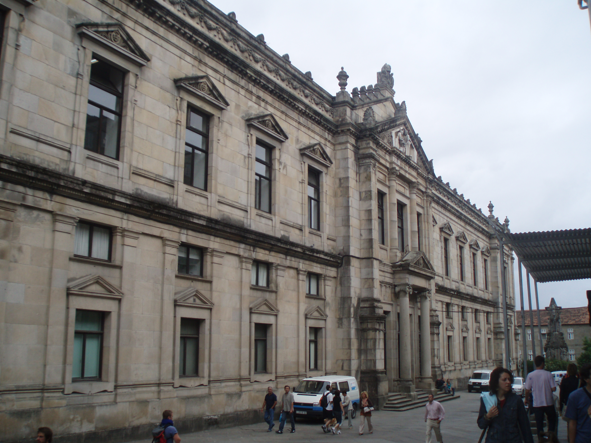

Venue
General information
Address: Rúa de San Francisco, s/n, 15782 Santiago de Compostela, A Coruña.
Plus code: VFM3+2Q Santiago de Compostela.
Coordinates: 42.88268818681163, -8.545600960415635.
Getting there
To reach Santiago de Compostela, you have several transportation options available:
By Airplane: Santiago de Compostela has an international airport, Aeropuerto de Santiago de Compostela (Airport code: SCQ), which offers domestic and international flights. To reach the venue, public transportation buses (line 6A) can be utilized, offering a travel time of approximately 40 minutes to San Roque 21 bus stop.
By Train: The city features Santiago de Compostela Railway Station, a central hub for train services. Renfe, the national train company, operates both regional and high-speed routes to Santiago de Compostela. Located near the city center, the station is a convenient 15-minute walk away, enabling easy access to accommodations and further exploration of the city.
By Bus: Santiago de Compostela has good bus connections with other cities in Spain and neighbouring countries. You can check for bus services operated by ALSA, the main intercity bus company, or other regional bus operators. For reaching the venue, bus lines 1, 4, 5, 6, 6A, 8, or P1 from Pastoriza Street to San Roque 21 (2 bus stops) can be utilized.
Around the venue

The Faculty of Medicine of the University of Santiago de Compostela is situated in an outstanding location in the historic centre of the city.
It is less than a 5-minute walk from the famous Cathedral of Santiago de Compostela, one of the most emblematic destinations for pilgrims completing the Camino de Santiago. It is about 550 metres northwest of the Plaza del Obradoiro, where the main façade of the Cathedral is located.
Regarding another neuralgic point of the city, the Faculty of Medicine is located approximately 10 minutes from Alameda Park (an urban park with panoramic views of the city).